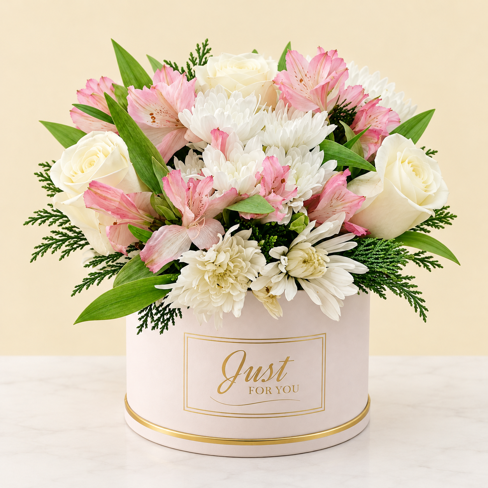
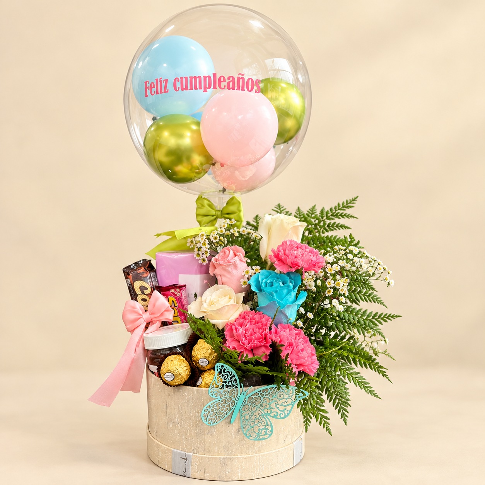
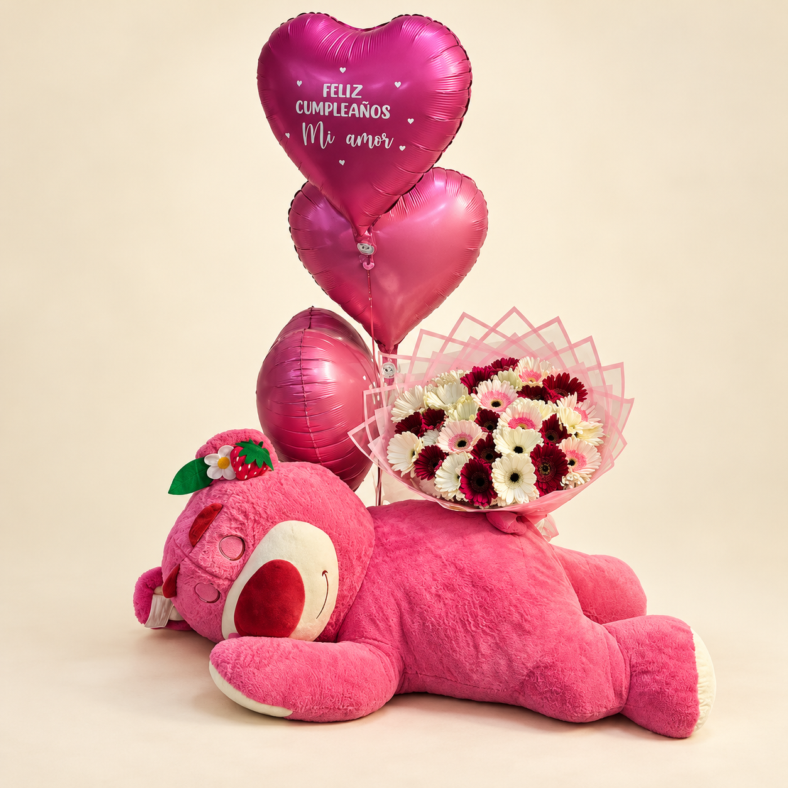
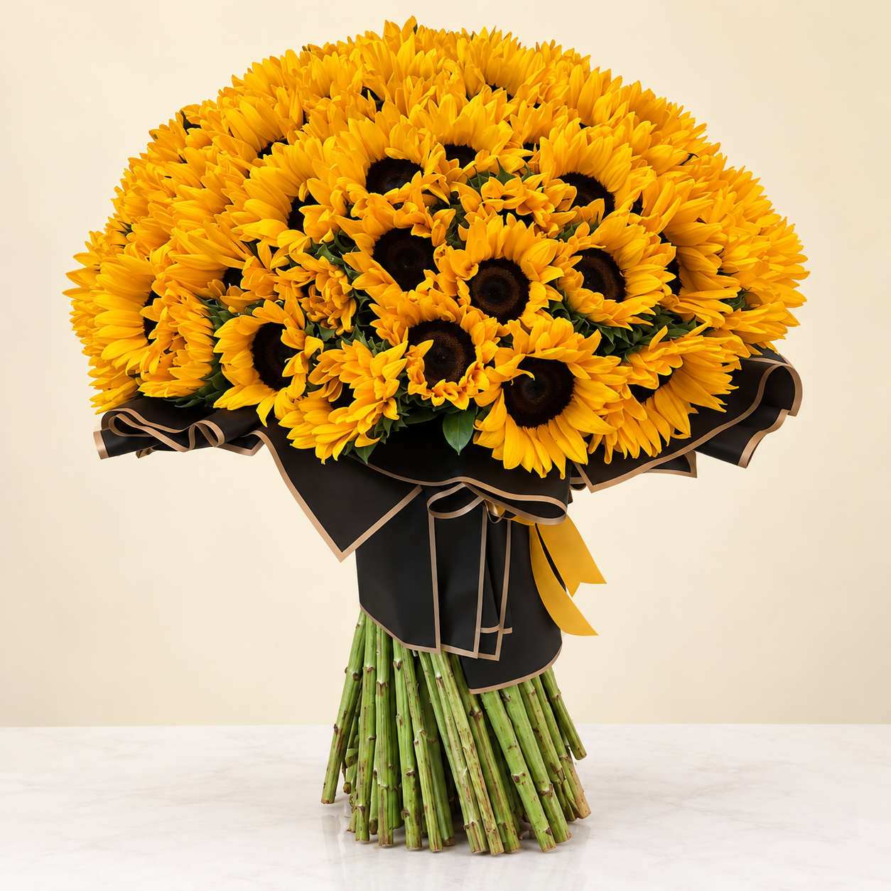

Canastas con temática propia, pensadas para asombrar en cada fecha importante con una presentación inolvidable
Pensados para que el día arranque con cariño, alegría y sabores deliciosos, nuestros desayunos sorpresa llegan en canastas temáticas armadas con dedicación. Son ideales para celebrar un aniversario por la mañana, un cumpleaños importante, el Día de la Madre o San Valentín, o sencillamente para hacerle saber a alguien cuánto lo quieres apenas abre los ojos. Todas incluyen un arreglo de flores frescas de temporada, en tonos vivos y alegres que despiertan los sentidos; panes artesanales recién salidos del horno, cuyo aroma resulta irresistible; café gourmet de grano seleccionado especialmente para cada ocasión; y delicias para la mañana como croissants, muffins, galletas caseras y mermeladas premium. Todo se presenta de forma impecable en canastos de mimbre natural o en recipientes elegantes que se pueden reutilizar, adornados con cintas alusivas a la fecha y tarjetas personalizadas. Tenemos alternativas para todos: desde desayunos íntimos para dos hasta versiones familiares abundantes, opciones veganas y sin gluten, y hasta formatos corporativos para sorprender a un equipo de trabajo o a clientes importantes. Coordinamos con anticipación la entrega en horario de mañana, de modo que cada elemento llegue fresco y quien lo recibe quede encantado desde el primer minuto del día.


Pensadas para quienes aprecian el bienestar, comer sano y la estética cuidada, nuestras canastas de frutas y flores unen salud, belleza natural y buen gusto en un solo obsequio que se recuerda. Cada una es una verdadera obra de arte que se puede comer: reunimos frutas frescas de temporada, escogidas una a una por su calidad, su sabor y su aspecto, y las acompañamos con flores que realzan sus colores naturales para lograr un conjunto visual sorprendente. Sumamos frutas exóticas como pitahaya, maracuyá, physalis y mango, además de clásicas como manzana, pera, uva y frutilla, ubicadas con criterio artístico entre girasoles, rosas, alstroemerias y follaje decorativo. Según el estilo que prefieras, la presentación puede ir en canastos tejidos a mano, cajas de madera rústica o recipientes modernos, con papel de seda natural y cintas orgánicas. Funcionan muy bien como regalo empresarial que demuestra interés por la salud de colaboradores y clientes, como obsequio para alguien que se está recuperando, para felicitar por un triunfo deportivo o académico, o como muestra de cariño hacia quienes cuidan lo que comen. Cada canasta lleva información nutricional de las frutas que contiene y recomendaciones para conservarlas, para que el regalo se disfrute al máximo.
Creadas para festejar la llegada de un nuevo integrante y acompañar a la familia en uno de los momentos más emotivos y especiales que vivirá, nuestras canastas para bebés son regalos florales realmente únicos. En cada una unimos la delicadeza y la pureza de las flores con artículos lindos y útiles para el recién nacido, de manera que el obsequio resulta a la vez práctico y lleno de significado. Para los arreglos elegimos flores suaves en tonos pastel, como rosas blancas y rosadas, lirios blancos, baby breath y variedades de temporada en colores tiernos que expresan inocencia. Entre los artículos para el bebé hay ropita de algodón orgánico en tallas recién nacido y 0-3 meses, baberos bordados, mantas suaves hipoalergénicas, productos de higiene para piel sensible, juguetes certificados de estimulación temprana, chupetes de silicona sin BPA y pequeños peluches de materiales seguros. Adaptamos cada canasta al sexo del bebé o usamos colores neutros si se quiere mantener la sorpresa, agregamos tarjetas de felicitación pensadas para los padres y damos la posibilidad de bordar el nombre del pequeño en algunas prendas. Todo va en recipientes reutilizables que luego sirven para ordenar las cosas del bebé, decorados con cintas de raso y papel tissue en colores combinados, para lograr una presentación inolvidable y perfecta para fotografiar en una etapa tan especial.


Si buscas lo más sofisticado en regalos con flores, nuestras canastas gourmet son la respuesta: reúnen flores premium y una cuidada selección de productos delicatessen capaces de conquistar a los paladares más exigentes. Cada una ofrece una experiencia gastronómica completa, con arreglos elegantes de orquídeas, rosas de jardín, peonías o flores exóticas según la temporada, junto a productos gourmet nacionales e importados de primerísima calidad. La parte gastronómica contempla quesos artesanales madurados, embutidos premium, aceite de oliva extra virgen, aceto balsámico añejado, chocolates belgas o suizos, vinos escogidos de bodegas reconocidas, champagne para las grandes ocasiones, pâtés y terrinas francesas, mermeladas artesanales de frutas exóticas, frutos secos premium, además de crackers y panes gourmet. Especialistas en gastronomía eligen cada producto y lo combinan con cuidado para lograr una experiencia que involucra todos los sentidos. Son ideales para regalos corporativos de alto nivel, aniversarios importantes, cenas románticas, agradecimientos a clientes VIP, celebraciones de ejecutivos o cualquier momento que exija un obsequio de gran distinción. Se presentan en cajas de madera noble, canastos de mimbre premium o envases de lujo que después quedan como piezas decorativas, junto con tarjetas que cuentan el origen y las particularidades de cada producto.
Zonas de despacho en Antofagasta, Chile
Sector Centro
Desayunos sorpresa y canastas premium
Barrio Brasil
Frutas exclusivas y canastas gourmet
Gran Vía
Celebraciones y canastas para bebés
Jardines del Sur
Desayunos coordinados por la mañana
Playa Blanca
Canastas a medida con temática
Coviefi
Presentaciones elegantes y canastas VIP
La Portada
Canastas para empresas y familias
Huamachuco
Canastas premium para residencias
Bonilla
Desayunos sorpresa de primer nivel
La Chimba
Canastas gourmet y saludables
Los Arenales
Canastas exclusivas para clubes
Corvallis
Canastas coordinadas con conserjería
Juan Pablo II
Canastas para condominios por etapas
Sector Sur
Canastas para departamentos
Sector Norte
Canastas rápidas cerca del aeropuerto
Caleta Coloso
Canastas orgánicas y naturales
Pedro Aguirre Cerda
Canastas especiales para villas
Avenida Grecia
Canastas temáticas bien completas
Avenida Angamos
Canastas coordinadas por acceso
Ven a conocernos